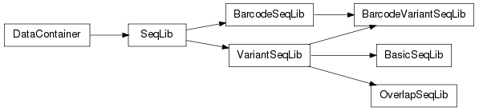

Data for each FASTQ file (or pair of FASTQ files for overlapping paired-end data) is read into its own SeqLib-family object.

1. datacontainer — Abstract class for Enrich data
2.1. seqlib — Abstract class for sequencing libraries
Enter search terms or a module, class or function name.